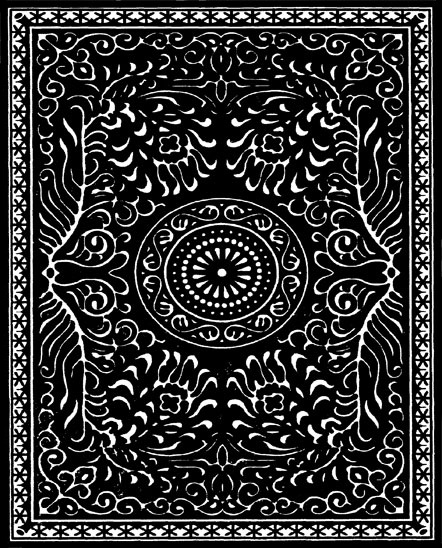

<!DOCTYPE html>
<html>
    <head>
        <meta charset="UTF-8">
        <meta name="viewport" content="width=device-width, initial-scale=1.0">
        <title>Document</title>
        <script src="jspsych/jspsych.js"></script>
        <link href="jspsych/css/jspsych.css" rel="stylesheet">
        <link rel="stylesheet" type="text/css" href="styling.css">
        <script src="https://ajax.googleapis.com/ajax/libs/jquery/3.5.1/jquery.min.js"></script>
        <script src="jspsych/plugins/jspsych-html-keyboard-response.js"></script>
        <script src="jspsych/plugins/jspsych-image-button-response.js"></script>
        <script src="jspsych/plugins/jspsych-instructions.js"></script>
        <script src="jspsych/plugins/jspsych-image-slider-response.js"></script>
        <script src="jspsych/plugins/jspsych-html-button-response.js"></script>
        <script src="jspsych/plugins/jspsych-resize.js"></script>
        <script src="jspsych\plugins\jspsych-call-function.js"></script>
        <script src="jspsych\plugins\jspsych-image-slider-response.js"></script>
        <script src= "jspsych\plugins\jspsych-html-slider-response-custom.js"></script>
        <script src="jspsych\plugins\jspsych-survey-likert.js"></script>
        <script src="jspsych\plugins\jspsych-survey-text.js"></script>
        <script src="jspsych\plugins\jspsych-survey-text-custom.js"></script>
        <script src="jspsych\plugins\jspsych-html-vas-custom.js"></script>
    </head>
<body></body>
<script>
console.log("MAINTHINGthing x");

//------------------------------------------------------------------------------------------------------------------------------------------------//
//FUNCTIONS AND FILES.

//I define these two arrays here so that I can skip running through the first rating phase. Both m_triplets and nm_triplets will otherwise
//be defined during the first phase based on attractiveness ratings by the participants. 

var fillers = [["img/28 fil LM-213.jpg", "img/28 fil LM-230.jpg"], ["img/21 fil BM-231.jpg", "img/21 fil BM-245.jpg"],
                ["img/22 fil AF-241.jpg", "img/22 fil AF-250.jpg"], ["img/23 fil LF-220.jpg", "img/23 fil LF-236.jpg"],
                ["img/25 fil WM-019.jpg", "img/25 fil WM-233.jpg"], ["img/24 fil WF-223.jpg", "img/24 fil WF-242.jpg"],
                 ["img/26 fil AM-248.jpg","img/26 fil AM-247.jpg"],["img/27 fil WM-222.jpg", "img/27 fil WM-237.jpg"]];
var all_m_nm = ['img/1 AF-224.jpg', "img/1 AF-226.jpg","img/1 AF-205.jpg",

                "img/2 AF-230.jpg","img/2 AF-216.jpg", "img/2 AF-256.jpg",
                
                "img/3 BF-004.jpg","img/3 BF-025.jpg", "img/3 BF-039.jpg",

                "img/4 BM-045.jpg","img/4 BM-039.jpg", "img/4 BM-229.jpg",

                "img/5 BM-022.jpg", "img/5 BM-041.jpg", "img/5 BM-046.jpg",

                "img/6 LF-209.jpg","img/6 LF-214.jpg", "img/6 LF-210.jpg",

                "img/7 LF-219.jpg","img/7 LF-225.jpg", "img/7 LF-254.jpg",

                "img/8 LM-243.jpg","img/8 LM-246.jpg", "img/8 LM-210.jpg",
            
                "img/9 LM-220.jpg","img/9 LM-226.jpg", "img/9 LM-235.jpg",

                "img/10 WF-208.jpg","img/10 WF-220.jpg", "img/10 WF-243.jpg",
                
                "img/11 WF-021.jpg","img/11 WF-031.jpg", "img/11 WF-230.jpg",

                "img/12 WM-010.jpg","img/12 WM-011.jpg", "img/12 WM-232.jpg",
            
                'img/13 BF-217.jpg','img/13 BF-243.jpg', 'img/13 BF-244.jpg',

                'img/14 AM-211.jpg','img/14 AM-218.jpg','img/14 AM-253.jpg',

                'img/15 WM-029.jpg','img/15 WM-231.jpg','img/15 WM-257.jpg',

                'img/16 BF-208.jpg','img/16 BF-212.jpg', 'img/16 BF-249.jpg',

                'img/17 WF-024.jpg','img/17 WF-205.jpg','img/17 WF-219.jpg',

                'img/18 LF-232.jpg','img/18 LF-249.jpg','img/18 LF-251.jpg',

                "img/19 BM-239.jpg", "img/19 BM-240.jpg", "img/19 BM-247.jpg",

                "img/20 AM-206.jpg", "img/20 AM-213.jpg","img/20 AM-230.jpg"];
//these two arrays contain all the faces needed and are preloaded in the init function. 


//used to shuffle triplets.
function shuffleArray(array) {
  for (let i = array.length - 1; i > 0; i--) {
    const j = Math.floor(Math.random() * (i + 1));
    [array[i], array[j]] = [array[j], array[i]];
  }
  return array;
}

//creates a manipulation index to be used for creating trial order and to keep track of when to manip during exp.
//the manipulation interval will vary between 3-5 trials.
function manipulation_index(manipulations){
let manip_index = new Array();
var manip_c = 1;
var c = 1;
manip_index.unshift(0,0,0,0,0);
manip_index.push(0);
while (manip_c <= manipulations){
    if (c == 3){
        var tmp = [0,0];
        tmp[random_range(0,1)] = 1; //assign a "1" to index position 0 or 1. 
        manip_index = manip_index.concat(tmp); //concat the tmp array to manip_index
        manip_c++
        c = 0;
    }
manip_index.push(0);
    c++
}
return manip_index
}

//trial order function to be called just before the second phase starts.
function trial_order(m_triplets, manipulations, manip_index){

var manip_idx = [].concat(manip_index); //creates copy of the manip_index array, which is denfined when the function above gets called.
var trial_order = new Array(manip_idx.length).fill([]); //the actual trial array which will be assigned face pairs.
for (let i = 0; i < m_triplets.length;i++){
    //for every triplet, assign the third_comparison to the 
    //trial_order index equal to the manip_index-index where the value = "1". 

    trial_order[manip_idx.indexOf(1)] = m_triplets[i][2];
    manip_idx[manip_idx.indexOf(1)] = 0; //remove the first index where manip_idx = 1. This is why we make a copy of manip_index, since we need
    //manip_index for knowing when to manipulate during exp.

}


for (let i = 0; i < m_triplets.length;i++){
    if (i == 0){
    
    var manip_range = trial_order.findIndex(arr => JSON.stringify(arr) === JSON.stringify(m_triplets[i][2]));
    
    pair2_idx = random_range(1, manip_range-2);
    pair1_idx = random_range(0,pair2_idx-1); // "-2" ensures that the first pair does not overlap 
    //with the third and that there is at least one trial slot open for the second pair bewtween the two.
   
    trial_order[pair2_idx] = m_triplets[i][1];
    trial_order[pair1_idx] = m_triplets[i][0]; 
    
        
    }else{
        var last_index = trial_order.findIndex(arr => JSON.stringify(arr) === JSON.stringify(m_triplets[i-1][2]));
        var manip_range = trial_order.findIndex(arr => JSON.stringify(arr) === JSON.stringify(m_triplets[i][2]));

        if (last_index-manip_range <= 4){

            pair1_idx = last_index+1;
            pair2_idx = pair1_idx+1;

            trial_order[pair1_idx] = m_triplets[i][0];
            trial_order[pair2_idx] = m_triplets[i][1];
        }

        else {
        pair2_idx = random_range(last_index+2, manip_range-2);
        pair1_idx = random_range(last_index+1, pair2_idx-1);

        trial_order[pair2_idx] = m_triplets[i][1];
        trial_order[pair1_idx] = m_triplets[i][0];}

    }
}

var empty_arr_idx = [];
for (i = 0; i < trial_order.length;i++){
if(trial_order[i].length==0){empty_arr_idx.push(i);}
}
//creates an index array for empty pairs in trial_order.

var idx = 0;
var idx2 = 18;
for (i = 0; i < nm_triplets.length; i++){
if (i <=4){
trial_order[empty_arr_idx[idx]] = nm_triplets[i][0];
trial_order[empty_arr_idx[idx+1]] = nm_triplets[i][1];
trial_order[empty_arr_idx[idx+2]] = nm_triplets[i][2];
idx = idx+3
}else{
    trial_order[empty_arr_idx[idx2]] = nm_triplets[i][0];
    trial_order[empty_arr_idx[idx2+1]] = nm_triplets[i][1];
    trial_order[empty_arr_idx[idx2+2]] = nm_triplets[i][2];
    idx2 = idx2+3
}
}
//adds some nm-triplets in the beginning and some in the end of the exp. 
shuffleArray(fillers);
var idx = 0;
for (i = 0; i < trial_order.length; i++){
    if(trial_order[i].length==0){
        trial_order[i] = fillers[idx];
        idx++
    }
}
//adds fillers in the remaining empty slots.

return trial_order}

function find_face_idx(trial_count, array){
var face_pair1;
var face_pair2;
for (i = 0; i < array.length; i++){
    if(JSON.stringify(array[i][0])==JSON.stringify(trial_orders[trial_count])){
        face_pair1 = array[i][1];
        face_pair2 = array[i][2];
    }
}

var trial_idx1;
var trial_idx2;
for (i = 0; i < trial_orders.length; i++){
    if(JSON.stringify(trial_orders[i])==JSON.stringify(face_pair1)){
        trial_idx1 = i;
    }else if(JSON.stringify(trial_orders[i])==JSON.stringify(face_pair2)){
        trial_idx2 = i;
    }
}
return [trial_idx1, trial_idx2]
}
//Finds trial_order index of the within-triplet y&z and x&z comparisons/pairs
//with respect the current x&y M-triplet-comparison. Ouputs array = [trial_idx1, trial_idx2]

function swapElement(array, indexA, indexB) {
  var tmp = array[indexA];
  array[indexA] = array[indexB];
  array[indexB] = tmp;
  return array
}
//swaps indexA with indexB in array. In this case trial_idx1 and trial_idx2 will be swapped,
//resulting in a trial order swap between the y&z and x&z comaprisons for the current M-triplet. This combo of functions are only defined
// for M-triplets. SO THE DYNAMIC RULE OF PRESENTATION ONLY APPLIES TO M-TRIPLETS!

//------------------------------------------------------------------------------------------------------------------------------------------------//
//DATA SAVING AND VARIABLES.


var prolificID = null;
    /////////////////////////////prolificID.length < 24 for exp
    while (prolificID == null || prolificID == "" || prolificID.length < 24) {
  prolificID = prompt("Please enter your Prolific ID (24 symbols)", "");
  }


//to check attempts to do the exp
function saveData_attempted(name, data){
var xhr = new XMLHttpRequest();
xhr.open('POST', 'write_data.php'); // 'write_data.php' is the path to the php file described above.
xhr.setRequestHeader('Content-Type', 'application/json');
xhr.send(JSON.stringify({filename: name+"_attempted", filedata: data}));
}

//after attractiveness
function saveData_attr(name, data){
var xhr = new XMLHttpRequest();
xhr.open('POST', 'write_data.php'); // 'write_data.php' is the path to the php file described above.
xhr.setRequestHeader('Content-Type', 'application/json');
xhr.send(JSON.stringify({filename: name+"_attr", filedata: data}));
}

///After Main Phase
function saveData_part1(name, data){
var xhr = new XMLHttpRequest();
xhr.open('POST', 'write_data.php'); // 'write_data.php' is the path to the php file described above.
xhr.setRequestHeader('Content-Type', 'application/json');
xhr.send(JSON.stringify({filename: name+"_part1", filedata: data}));
}


//To save data after second choice
function saveData2(name, data){
var xhr = new XMLHttpRequest();
xhr.open('POST', 'write_data.php'); // 'write_data.php' is the path to the php file described above.
xhr.setRequestHeader('Content-Type', 'application/json');
xhr.send(JSON.stringify({filename: name+"_part2", filedata: data}));
}

//Save data at end of exp
function saveData(name, data){
var xhr = new XMLHttpRequest();
xhr.open('POST', 'write_data.php'); // 'write_data.php' is the path to the php file described above.
xhr.setRequestHeader('Content-Type', 'application/json');
xhr.send(JSON.stringify({filename: name+"_end", filedata: data}));
}


//Other experiment variables.
var m_triplets = [];
var nm_triplets = [];
var timeline = [];
var selected_face = [];
var feedback_face = '';
var order_swap_face;
var unshuffled;
var attr_trial_count = 0;
var trial_count = 0;
var trial_count2 = 0;
var radio_rating = 0;
var choice_dur= null;
var confidence_dur=null;222222222222222
var sum_dur=null;
var manip_index;
var consenting_end;
var subject=prolificID;
var d = new Date();
var today=d.getFullYear() + '-' + (d.getMonth()+1) + '-' + d.getDate()+' '+d.getHours()+':'+d.getMinutes();
var filename=subject+'_'+d.getFullYear() + '_' + (d.getMonth()+1) + '_' + d.getDate()+'_'+d.getHours()+'_'+d.getMinutes();


//temporary variable
/*var manip_index = new Array();*/

//------------------------------------------------------------------------------------------------------------------------------------------------//
//INITIALIZE EXP.

var welcome = {
      type: "html-keyboard-response",
      stimulus: "Welcome to the experiment. <br> We will start with a quick calibration of the screen. <br> Press any key to begin",
      data: {screenid: 'welcome'},
      on_finish:function(){jsPsych.data.addProperties({subject: subject, date: today})}
   
    };
timeline.push(welcome);


var inputs = {
    type: 'resize',
    item_width: 3 + 3/8,
    item_height: 2 + 1/8,
    prompt: "<h1> Calibration </h1><p>Click and drag the lower right corner of the box until the box is the same size as a credit card held up to the screen. <br> When the rectangle has the same size as the card, press continue</p>",
    pixels_per_unit: 150,
};
timeline.push(inputs);


var write_data_attempted = {
          type: 'call-function',
          func: function(){saveData_attempted(filename, jsPsych.data.get().csv())}
      }
      //timeline.push(write_data_attempted);

//////////////////////////////////////////PHASE 1 STARTS///////////////////////////////////////////////


var instruction_attractiveness = {
        type: "html-keyboard-response",
        stimulus: "<div class='main_div'>"+
        "<h1>First part: Attractiveness Rating</h1>"+
        "<p style = 'font-size: 22px;'>In this first part of the experiment you will be asked to rate how attractive you find different faces. Each face will appear only for a limited time (3 seconds) and you will then be able to give your rating on scale from 0-100."+
        "<p style = 'font-size: 22px;'>Try to pay attention so that you do not miss the faces!</p>"+
        "<p style = 'font-size: 22px;'>Press any key when you are ready</p>"+
        "</div>",
        data: {screenid: 'instruction_attractiveness'},
      };
timeline.push(instruction_attractiveness);

shuffleArray(all_m_nm);
triplet_idx = all_m_nm.map(str => str.substring(str.indexOf('img/') + 4, str.indexOf(' ')));
//finds triplet index for each face by referencing the triplet number (eg. "1" in img/1 AF-242.jpg)

//array with object containing key:object pairs for each M and NM-triplet. Each nested object will contain 3 face:rating pairs.
var triplet_ratings = [{t1: {},
                        t2: {},
                        t3: {},
                        t4: {},
                        t5: {},
                        t6: {},
                        t7: {},
                        t8: {},
                        t9: {},
                        t10: {},
                        t11: {},
                        t12: {},
                        t13: {},
                        t14: {},
                        t15: {},
                        t16: {},
                        t17: {},
                        t18: {},
                        t19: {},
                        t20: {}}
];
var rating_index = [];


for (let j = 0; j < all_m_nm.length; j++){

    var delib_attr = {
    type: "html-keyboard-response",
    choices: jsPsych.NO_KEYS,
    trial_duration: 1,
    stimulus: function(){return "<div class='main_div'>"+
    "<p style = 'font-size: 24px;'> How strong is the preference for the face you selected? </p>" +
  "" +
  "</div>"},
    on_finish: function(data){
        data.attr_trial = attr_trial_count;
        console.log("Current attr trial ", attr_trial_count);
        console.log(all_m_nm[attr_trial_count]);
        data.screenid="exposition_attractiveness";
        data.attractiveness_face=all_m_nm[attr_trial_count];
        }
    };

button_attr=['<button class="button_attr">Submit rating</button>'];    
    var scale = {
        type: 'html-vas-custom',
        stimulus: function(){
            this_stim=
        "<div class = 'main_div'>" +      
            "<p style = 'font-size: 24px;'>How attractive do you think this face is? </p>" +
                "</img>" +

                "<table>" +
                    "<tr>" +
                        "<td class='leftTdVas'>0<br>Not very<br>Attractive</td>" +
                        "<td>" +
                            "<div class = 'slider_tick_container'>"+
                                "" +
                                "<div id='customTick2' class='customTick2'>" +
                                ''+
                        "</td>" +
                        "<td class='rightTdVas'>100<br>Very<br>Attractive</td>" +
                    "</tr>" +
                    "<tr>" +
                        "<td colspan='3'>" +
                            "<div id='mySlider5_value'></div>" +
                        "</td>" +
                    "</tr>" +
                    "</div>"+
                "</table>"+
        "</div>"

        return this_stim
        },
        require_movement:true,
        button_html: button_attr, 
        on_finish: function(data){
            data.attr_trial = attr_trial_count;
            data.screen_id = "attractiveness_scale",
            attrativeness_dur = data.rt;
            data.attractiveness_rating=vas_rating;
            console.log("value of attractiveness rating :" + vas_rating);

            //Store ratings in respective triplets
            var tr_idx = triplet_idx[attr_trial_count];
            triplet_ratings[0]["t" + tr_idx][all_m_nm[attr_trial_count]] = vas_rating;
            attr_trial_count++
        }
        
        };
timeline.push(delib_attr, scale);
}


var data_attr = {
          type: 'call-function',
          func: function(){saveData_attr(filename, jsPsych.data.get().csv())}
      }
      timeline.push(data_attr);


//Before the main phase of the experiment we need to internally sort the triplets according to ratings.
//Then we store the sorted M-triplets and NM-triplets in their respective arrays.
//We can then create the trial order with functions defined at the top of the script.

function sort_triplets_ratings(array){
    for (var key in array[0]){
        var currentObj = array[0][key];
        var sortedObj = {};
        Object.keys(currentObj).sort(function(a, b) {
            return currentObj[b] - currentObj[a];
        }).forEach(function(key) {
            sortedObj[key] = currentObj[key];
        });
        array[0][key] = sortedObj;
    }

    return array;
}
//Function used to sort the nested face:ratings pairs in triplet_ratings.

function save_relative_rating(face) {
  var substring = face.slice(4, -4);
  var face_wth_r = face; // Set the default value of face_wth_r to the original face value
  for (n = 0; n < rating_index.length; n++) {
    if (rating_index[n].toString().includes(substring)) {
      face_wth_r = rating_index[n];
      break; // Exit the loop once the substring is found
    }
  }
  return face_wth_r;
}
//adds X,Y or Z to the face-identifying string depending on its triplet relative rating. For example: if AF-242 is rated number one, it becomes AF-242_X.


var trial_orders = [];
var unique_pairs;

var create_trial_order = {
    type: 'call-function',
    func: function(){
        console.log("Attr phase is done, creating trial order...")
        triplet_ratings = sort_triplets_ratings(triplet_ratings);
        console.log(triplet_ratings);
        
        /*
        var tmp = Object.entries(triplet_ratings[0]["t1"]);
        trial_orders.push([tmp[0][0],tmp[1][0]],[tmp[1][0],tmp[2][0]], [tmp[0][0],tmp[2][0]]);
        manip_index.push(0,1,0);
        console.log("Manip index: ", manip_index)
        console.log("Trial orders: ", trial_orders);
        //Lets first sort the triplet objects internally acording to ratings so that {tx: {face1: value, face2: value -1, face3: value - 2}. 
        */
      
        var m_trip_count = 0;
        var keys = shuffleArray(["t1","t2","t3","t4","t5","t6","t7","t8","t9",
                                "t10","t11","t12","t13","t14","t15","t16","t17","t18","t19","t20"]);
        console.log(keys);


        for(var j = 0; j < keys.length; j++){
        var key = keys[j];
        var tmp = Object.entries(triplet_ratings[0][key]); //For every key in triplet_ratings, access the ordered faces according to ratings.
        if(m_trip_count < 12){ //the last M-triplet number is 17, after that we add triplets to NM_triplets. SEE the m_triplet and nm_triplet arrays at top of script.
            m_triplets.push([[tmp[0][0],tmp[1][0]],[tmp[1][0],tmp[2][0]], [tmp[0][0],tmp[2][0]]]); 
            m_trip_count++  
        }else{
            nm_triplets.push([[tmp[0][0],tmp[1][0]],[tmp[1][0],tmp[2][0]], [tmp[0][0],tmp[2][0]]]);
        }
        var face_X = tmp[0][0].replace('.jpg', '_X').slice(4);
        var face_Y = tmp[1][0].replace('.jpg', '_Y').slice(4);
        var face_Z = tmp[2][0].replace('.jpg', '_Z').slice(4);
        rating_index.push(face_X,face_Y,face_Z);
        console.log(rating_index);
        }


    console.log("M-triplets: ", m_triplets);
    console.log("NM-tripets: ", nm_triplets);
    shuffleArray(m_triplets); //shuffle both m and nm triplet arrays.
    shuffleArray(nm_triplets);
    manip_index = manipulation_index(12); //call the manip index function, creating an index like: 00000100010000010001.....
    console.log(manip_index);
    trial_orders = trial_order(m_triplets,12, manip_index); //create the trial_orders array to loop over during phase 2.
    console.log("Ratings: ", triplet_ratings[0])
    console.log("Trial order: ",trial_orders); //we can see that the internal triplet order in trial_orders matches that of the triplet_ratings object.
    
}};

timeline.push(create_trial_order);


        //////////////////////////////////////////PHASE 2 STARTS///////////////////////////////////////////////

        button_instr=['<button class="button_instr">Continue</button>'];        
var start_exp = {

        type: "html-button-response",
        choices: ["Continue"],
        button_html: button_instr,
        stimulus: "<div class = 'main_div'>"+
        "<h1>Instructions main task</h1>"+
        "<p style = 'font-size: 22px;'>In this part, you will be presented with pairs of cards with faces on. The cards will be presented to you face up, and you will be able to see both faces for a brief period of time.</p>"+
      "<p style = 'font-size: 22px;'> Once the cards turn face down, your task is to select the card which has the face you find the most attractive. </p>"+
      " <p style = 'font-size: 22px;'>After making each choice, you will be asked to indicate how much more you preferred the face you selected over the other. </p>"+
      "<p style = 'font-size: 22px;'>You will then be asked to give an open ended explanation for you choice. You can mention any reasons that mattered for your decision. You are not restricted to specific facial features that will be mentioned later.</p>"+
       "<p style = 'font-size: 22px;'>You will need to input a minimum of 15 and a maxmium of 240 characters.</p>"+
      " <p style = 'font-size: 22px;'>Finally, the face you selected will be shown to you again and you will be asked </p>"+
       " <p style = 'font-size: 22px;'to select what feature of the face, from a number of fixed options, mattered most for your choice.</p>"+
       "<p style = 'font-size: 22px;'>As the faces will only be presented for a brief period of time, please attend to them carefully</p>"+
       "<p style = 'font-size: 22px;'> Click the continue button only when you are ready</p>" + "</div>",

        data: {screen_id: 'start_exp'}
        };

timeline.push(start_exp);


//Main Exp Loop
for (var i = 0; i < 66; i++) {//66 = number of pairs that will be in trial_orders. 


    var fixation = {
    type: 'html-keyboard-response',
    stimulus: '<span style="font-size:40px;">+</span>',
    choices: jsPsych.NO_KEYS,
    trial_duration: 2000,
    data: {screen_id: "fixation"},
    on_finish: function(data){
        data.trial = trial_count
        console.log("Current trial: ", trial_count);
        }
    };

var delibiration = {
        type: "html-keyboard-response",
        
        stimulus: function(){
            
            console.log("SHUFFLED: ", shuffleArray(trial_orders[trial_count]));
          
            return "<div class = 'main_div'>" +
            "<div class='left_stim'></div>" +
            "<div class='right_stim'></div>" +
            "</div>"
            },

        choices: jsPsych.NO_KEYS,
        trial_duration: 4000,
        data: {screen_id: "delib"},
        on_finish: function(data){
            data.trial = trial_count;
            data.left_face = save_relative_rating(trial_orders[trial_count][0]);//Adds X,Y or Z to the face-identifying string depending 
            data.right_face = save_relative_rating(trial_orders[trial_count][1]);//upon the triplet-relative rating of the face.
            console.log("Left face with relative rating: ", data.left_face + ". Right face with relative rating: " + data.right_face);
        }
    };
    


    button_choice_first=['<button id = "left_button_first">Left</button>','<button id = "right_button_first">Right</button>'];

    choice = {
        type: 'html-button-response',
        choices: ["Left Face","Right Face"],
        button_html: button_choice_first, 
        stimulus: "<div class = 'main_div'>" +
            "<p style = 'font-size: 24px;'> Which face do you find the most attractive? </p>" +
            "<div class='left_stim'> </div>" +
            "<div class='right_stim'> </div>" +
            "</div>",

        on_finish: function(data){
            data.trial = trial_count;
            choice_dur=data.rt;
            data.screenid="choice_cardback"
            data.left_face=save_relative_rating(trial_orders[trial_count][0]);
            data.right_face=save_relative_rating(trial_orders[trial_count][1]);
            if (data.button_pressed == 0){
                selected_face.push("leftarrow");
                order_swap_face = data.left_face;
                data.selected_face = order_swap_face;
            }else
                {
                selected_face.push("rightarrow");
                order_swap_face = data.right_face;
                data.selected_face = order_swap_face;}
            
            console.log(selected_face);
            console.log("Selected face: ", data.selected_face);
        }
        };


    var call_func = {
    type: 'call-function',
    data: {screen_id: "SWAP_FUNC"},
    func: function(){ //this function implements the dynamic rule of presentation for M-triplets.
        if ((save_relative_rating(trial_orders[trial_count][0]).includes("X")&&save_relative_rating(trial_orders[trial_count][1]).includes("Y"))||(save_relative_rating(trial_orders[trial_count][0]).includes("Y")&&save_relative_rating(trial_orders[trial_count][1]).includes("X"))){
            console.log("THIS IS AN XY-COMPARISON... SWAP ORDER IF S SELECTED Y AND THE FACE IS AN M-TRIPLET FACE");
        
            var triples = getTriplets(trial_orders[trial_count])

            if (order_swap_face.includes("Y")){
                console.log("SWAPPED ORDER OF YZ AND XZ COMPARISON.");
                var idx = find_face_idx(trial_count, triples); 
                console.log(idx);   
                swapElement(trial_orders, idx[0], idx[1]);
                console.log(trial_orders);
                }
            }
        }
    }

    myRadio = document.querySelector("input[name='sl2']");
    function radioClick(v) {
      let rb = 'sl2_' + v;  // match the id of each option, here "sl2_1", "sl2_2", etc.
      document.getElementById(rb).checked = true;
      radio_rating=v;
      document.querySelector('#jspsych-html-slider-response-next').disabled = false;//enable button to continue
    }


    button_conf=[
        '<button class="button_confidence">Continue</button>'];

      var confidence_scale = {
          type: 'html-vas-custom',
          require_movement:true,
          stimulus: function(){
        var stim;
            if (selected_face[0]=="leftarrow") {
            stim = 
            "<div class = 'main_div'>" +      
                "<p style = 'font-size: 24px;'> How strong is your preference for the face you selected? </p>" +
        "<div class='left_stim'>  </div>" +
        "<div class='right_stim'> </div>"+


                "<table>" +
                    "<tr>" +
                        "<td class='leftTdVas'>0<br>Not very<br>strong</td>" +
                        "<td>" +
                            "<div class = 'slider_tick_container'>"+
                                "" +
                                "<div id='customTick2' class='customTick2'>" +
                                ''+
                        "</td>" +
                        "<td class='rightTdVas'>100<br>Very<br>strong</td>" +
                    "</tr>" +
                    "<tr>" +
                        "<td colspan='3'>" +
                            "<div id='mySlider5_value'></div>" +
                        "</td>" +
                    "</tr>" +
                    "</div>"+
                "</table>"+
        "</div>"
        return stim
}


            else{stim =
                "<div class = 'main_div'>" +    
                    "<p style = 'font-size: 24px;'> How strong is your preference for the face you selected? </p>" + 
        "<div class='left_stim'>  </div>" +
        "<div class='right_stim'> </div>"+


                "<table>" +
                    "<tr>" +
                        "<td class='leftTdVas'>0<br>Not very<br>strong</td>" +
                        "<td>" +
                            "<div class = 'slider_tick_container'>"+
                                "" +
                                "<div id='customTick2' class='customTick2'>" +
                                ''+
                        "</td>" +
                        "<td class='rightTdVas'>100<br>Very<br>strong</td>" +
                    "</tr>" +
                    "<tr>" +
                        "<td colspan='3'>" +
                            "<div id='mySlider5_value'></div>" +
                        "</td>" +
                    "</tr>" +
                    "</div>"+
                "</table>"+
        "</div>"
            return stim
            }
        
            },


          button_label:"Continue",
          data: {screen_id: "confidence_scale"},
          on_finish: function(data){
            data.trial = trial_count;
            confidence_dur=data.rt;
            sum_dur= choice_dur+confidence_dur;
            data.confidence_rating=vas_rating
            console.log("value of radio scale end screen :" + vas_rating);
          }
      };
     
      var delay_cardback2 = {
        type: "html-keyboard-response",
        stimulus:function(){
            var this_stim;
                if (selected_face[0]=="leftarrow") {
                this_stim=
                "<div class = 'main_div'>" +     
                    "<p style = 'font-size: 24px;'> Please wait...</p>" +
            "<div class='left_stim'>  </div>" +
            "<div class='right_stim'> </div>"+
            "</div>"
                    }
                else{this_stim=
                    "<div class = 'main_div'>" +     
                     "<p style = 'font-size: 24px;'> Please wait...</p>" +
            "<div class='left_stim'>  </div>" +
            "<div class='right_stim'> </div>"+
            "</div>"
                    }return this_stim
                },

        choices: jsPsych.NO_KEYS,
        data: {screen_id: "delay_cardback2"},
        trial_duration:function(){
        var dur= null;
            (function(){
                sum_dur = choice_dur+confidence_dur
                dur=7000-sum_dur;
                if (dur<0) {dur=0};})()
        console.log(dur,"dur computed on cardback2")
        return dur},
        on_finish: function(data){
            data.trial = trial_count;
        }
        }; 

      var survey = {
  type: 'survey-text-custom',
  preamble: function() {
        if (manip_index[trial_count]==1){
            console.log("classic");
            if (selected_face[0]=="leftarrow"){
                var f_screen =
                "<div class = 'main_div'>" +     
                "<div class='left_stim'>  </div>" +
                "<div class='right_stim'> </div>"+
                "</div>",
            feedbacked_face=save_relative_rating(trial_orders[trial_count][1]);
            
            }else if (selected_face[0]=="rightarrow"){
                var  f_screen=
                "<div class = 'main_div'>" +     
                "<div class='left_stim'>  </div>" +
                "<div class='right_stim'> </div>"+
                "</div>"
          
                feedbacked_face=save_relative_rating(trial_orders[trial_count][0]);
            }else{
                var  f_screen= "<p class='small'><strong>Timed out</strong></p></div>" ;
            }
        }else{
            //Not a manipulation trial.
            if (selected_face[0]=="leftarrow") {
                var  f_screen=
                "<div class = 'main_div'>" +     
                "<div class='left_stim'>  </div>" +
                "<div class='right_stim'> </div>"+
                "</div>"
                feedbacked_face=save_relative_rating(trial_orders[trial_count][0]);

            }else if (selected_face[0]=="rightarrow"){
                var  f_screen=
                "<div class = 'main_div'>" +     
                "<div class='left_stim'>  </div>" +
                "<div class='right_stim'> </div>"+
                "</div>"
                feedbacked_face=save_relative_rating(trial_orders[trial_count][1]);
            }else{
                var  f_screen= "<p class='small'><strong>Timed out</strong></p></div>";}
        }

        return f_screen},
  questions: [
    {
      prompt: "<p style = 'font-size: 24px;'>Explain briefly why you chose this face.</p>" +
              "<p style = 'font-size: 18px;'>Text box will stop responding when the limit of 240 characters has been reached!</p>" ,
      rows: 5
    }
  ]
};


  button_array=[
    '<button class="button1">Mouth</button>','<button class="button2">Eyes</button>',
    '<button class="button3">Nose</button>','<button class="button4">Proportion</button>',
    '<button class="button5">Skin</button>','<button class="button6">Shape</button>',
    '<button class="button7">I actually prefer the other face</button>'];

    var feedback_array = {
    type: "html-button-response",
    button_html: button_array,
    choices: ["Mouth", "Eyes","Nose", "Proportion", "Skin","Shape","I actually prefer the other face"],
    stimulus:function(){

    if (manip_index[trial_count]==1){
        console.log("classic");
        if (selected_face[0]=="leftarrow"){
            var f_screen = 
            "<div class = 'main_div'>" +    
                "<p style = 'font-size: 24px;'> Select one feature which best explains your choice. </p>" +
                "<div class='left_stim'>  </div>" +
                "<div class='right_stim'> </div>"+
            "</div>"
        feedbacked_face=save_relative_rating(trial_orders[trial_count][1]);
          
        }else if (selected_face[0]=="rightarrow"){
            var  f_screen=
            "<div class = 'main_div'>" +    
                "<p style = 'font-size: 24px;'> Select one feature which best explains your choice. </p>" +
                "<div class='left_stim'>  </div>" +
                "<div class='right_stim'> </div>"+
            "</div>"
            feedbacked_face=save_relative_rating(trial_orders[trial_count][0]);
        }else{
            var  f_screen="<p class='small'><strong>Timed out</strong></p></div>" ;
        }
    }else{
        //Not a manipulation trial.
        if (selected_face[0]=="leftarrow") {
            var  f_screen=
            "<div class = 'main_div'>" +    
                "<p style = 'font-size: 24px;'> Select one feature which best explains your choice. </p>" +
                "<div class='left_stim'>  </div>" +
                "<div class='right_stim'> </div>"+
            "</div>"
            feedbacked_face=save_relative_rating(trial_orders[trial_count][0]);

        }else if (selected_face[0]=="rightarrow"){
            var  f_screen=
            "<div class = 'main_div'>" +    
                "<p style = 'font-size: 24px;'> Select one feature which best explains your choice. </p>" +
                "<div class='left_stim'>  </div>" +
                "<div class='right_stim'> </div>"+
            "</div>"
            feedbacked_face=save_relative_rating(trial_orders[trial_count][1]);
        }else{
            var  f_screen="<p class='small'><strong>Timed out</strong></p></div>";}
    }

    return f_screen
    },
    data: {screen_id: "feedback"},
    trial_gap: 200,
    on_finish: function(data){
        data.trial = trial_count;
        data.feedbacked_face=feedbacked_face
        data.left_face=save_relative_rating(trial_orders[trial_count][0]);
        data.right_face=save_relative_rating(trial_orders[trial_count][1]);


        if (manip_index[trial_count]==1){
            data.manipulated=1;
        }else{
            data.manipulated=0;
        }


            //record selected face
        if (selected_face[0]=="leftarrow") {
        data.selected_face=save_relative_rating(trial_orders[trial_count][0]);}
        else if (selected_face[0]=="rightarrow") {data.selected_face=save_relative_rating(trial_orders[trial_count][1]);}


            if (data.button_pressed==0) {
        data.button_selected="mouth"}
        else if (data.button_pressed==1) {
        data.button_selected="eyes"}
        else if (data.button_pressed==2) {
        data.button_selected="nose"}
        else if (data.button_pressed==3) {
        data.button_selected="proportion"}
        else if (data.button_pressed==4) {
        data.button_selected="skin"}
        else if (data.button_pressed==5) {
        data.button_selected="shape"}
        else if (data.button_pressed==6) {
        data.button_selected="other face"}

        console.log(data.button_selected);

        //Record detection
        if (data.button_selected=="other face") {
        data.detection=1}
        else {
        data.detection=0}

        trial_count++
        selected_face.pop();
    }
};

timeline.push(fixation, delibiration, choice, call_func, confidence_scale, delay_cardback2, survey, feedback_array);
}
 //Phase 2 loop ends.


//ROUND 2 STARTS HERE


var write_data_part1 = {
    type: 'call-function',
    func: function(){saveData_part1(filename, jsPsych.data.get().csv())}
}
timeline.push(write_data_part1)


/////////////////////////////////////PHASE 3 - SECOND CHOICE//////////////////////////////////////////////////////////////////////////////////////

var choice2_instruction = {
type: "html-keyboard-response",
stimulus: "<div class = 'main_div'>" +   
"<h1>Instructions for Second Round choice</h1>"+
"<p style = 'font-size: 22px;'>Great job so far, you are almost done!"+
"<p style = 'font-size: 22px;'>In this last part you will be asked to choose again between faces based on how attractive you think they are, but this time you will not have to explain the reasons behind your choice.</p> "+
"<p style = 'font-size: 22px;'>Press any key when you are ready.</p>"+
"</div>",
    on_finish:function(data){
        console.log(trial_count2);
        data.trial2 = trial_count2;
        data.screen_id = "choice2_instructions";
        
        trial_orders = shuffleArray(trial_orders); //shuffle trial order.
        trial_orders = trial_orders.filter(subarray => !subarray.some(element => element.includes("fil"))); //filter out filler pairs.
        console.log(trial_orders);
    }

  };
timeline.push(choice2_instruction);

button_choice=['<button id = "left_button">Left</button>','<button id = "right_button">Right</button>'];
for (var i = 0; i < 60; i++){// 66 - 7 filler pairs.

    var choice2_deliberation = {
    type: "html-keyboard-response",
    stimulus: function(){
            unshuffled = trial_orders[trial_count2];
            console.log("ORIGNIAL: ", unshuffled);
            console.log("SHUFFLED: ", shuffleArray(trial_orders[trial_count2]));

            stim="<div class = 'main_div'>" +
            "<div class='left_stim'></div>" +
            "<div class='right_stim'></div>" +
            "</div>"
        return stim},

    choices: jsPsych.NO_KEYS,
    data: {screen_id: "deliberation2"},
    trial_duration:4000,

    on_finish:function(data){
        console.log("choice2 trial :" + trial_count2);
        data.trial2 = trial_count2;
        data.left_face=save_relative_rating(trial_orders[trial_count2][0]);
        data.right_face=save_relative_rating(trial_orders[trial_count2][1]);
        console.log("Left face with relative rating: ", data.left_face + ". Right face with relative rating: " + data.right_face);

        }
    };

    var cardback_choice2 = {
    type: "html-button-response",
    margin_vertical: "0px",
    margin_horizontal: "190px",
    button_html: button_choice,
    choices: ["Left face","Right face"],
    stimulus:
    "<div class = 'main_div'>" +
            "<p style = 'font-size: 24px;'> Which face do you find the most attractive? </p>" +
            "<div class='left_stim'> </div>" +
            "<div class='right_stim'> </div>" +
            "</div>",

    data: {screen_id: "cardback_choice2"},
    on_finish:function(data){
        if (data.button_pressed==0) {selected_face.push("leftarrow")}else {selected_face.push("rightarrow")}
        data.left_face=save_relative_rating(trial_orders[trial_count2][0]);
        data.right_face=save_relative_rating(trial_orders[trial_count2][1]);
    
        if (selected_face[0]=="leftarrow") {
        data.selected_face=save_relative_rating(trial_orders[trial_count2][0]);
        console.log(data.selected_face);}
        else if (selected_face[0]=="rightarrow") {data.selected_face=save_relative_rating(trial_orders[trial_count2][1]);
        console.log(data.selected_face);}
        
        data.trial2 = trial_count2;

        trial_count2++
        selected_face.pop();
        }
    };

timeline.push(choice2_deliberation, cardback_choice2);
} //END OF PHASE 3 - SECOND CHOICE LOOP.


var write_data = {
    type: 'call-function',
    func: function(){saveData2(filename, jsPsych.data.get().csv())}
}
timeline.push(write_data);


//ENDING QUESTIONS AND CONSENT

var end_exp = {
  type: "html-keyboard-response",
  stimulus: "<div style='width: 80%;margin:0 auto;'>"+
 "You are done with the main part of the experiment! Now you will be asked to answer a few questions. <br>"+
 "Please note that an answer to these questions is an important part of the experiment."+
 "<p>Please answer honestly and do not look up the answers beforehand. We need your honest responses for further analyses. The content of your answers here will not have any consequences on the validation of your participation and subsequent earning of monetary reward.</p>"+
  "<br> <br> <br> <br> Press any key to start </div>",
  data: {screenid: 'end_exp'},
};
timeline.push(end_exp);


var engagement = {
  type: 'survey-likert',
  preamble:"<p>Please remember that the content of your answer will not be used for deciding to validate your participation, but you need to answer</p>",
  questions: [
    {prompt: "How much were you engaged during the task?", name:"Self-reported engagement",labels: ["1","2","3","4","5"]}
  ],
  data: {screen_id: "engagement"}
};
timeline.push(engagement);

var misalign = {
  type: 'survey-likert',
  preamble:"<p>Due to limitations of our experiment we predict that some participants will experience some alignment issues with the items on screen,</p>"+
  "<p>where the faces/cardbacks 'shift' around and change position at times. Below we ask you to state to what degree this applied to your experience during the experiment.</p>",
  questions: [
    {prompt: "To what degree did the elements on screen 'jump around'/change position?", name:"Self-reported engagement",labels: ["1","2","3","4","5"]}
  ],
  data: {screen_id: "alignment"}
};
timeline.push(misalign);

var Q2_button= {
  type: 'survey-text',
  questions: [
    {prompt: "Why did you press the 'I actually prefer the other face' button? Please state multiple or a unique reason", rows: 5, columns: 40, name:"why other face button?"}
],
data: {screen_id: "prefer_other_explanation"}
};
timeline.push(Q2_button);

var CB_knowledge= {
  type: 'survey-text',
  preamble:"<div style='width: 80%;margin:0 auto;'>"+
  "<p>PLEASE ANSWER HONESTLY AND DON'T LOOK UP THE ANSWERS on internet. We need your honest responses for further analyses. The content of your answers here will not have any consequences on the validation of your participation and subsequent earning of monetary reward.</p>",
  questions: [
        {prompt: "Have you ever heard about 'choice blindness'? If so, please describe what you think it is.", rows: 5, columns: 40, name:"knows cb?" },
],
    data: {screen_id: "CB_knowledge"}
};
timeline.push(CB_knowledge);


var end_exp_final = {
  type: "html-keyboard-response",
  stimulus: "<div style='width: 80%;margin:0 auto;'>"+
 "Thanks for your answers!"+
  "<br> <br> <br> <br>  After debriefing and filling of a consent form you will get the completion link."+
  " <br> <br> Press any key to continue to the end. </div>",
  data: {screenid: 'end_exp_final'},
};
timeline.push(end_exp_final);


var debriefing={
  type:"html-keyboard-response",
  stimulus:"<div style='width: 80%;margin:0 auto;'>"+
  "<h1>Information about the experiment</h1>"+
  "<p> In addition to study how attractiveness influences choice and preference ratings, we also studied how aware people are of the reasons behind their choices."+
  " In this experiment, 12 out of 64 trials were manipulated. The pictures were swapped, which means that 12 times you chose one picture, but we asked you to give reasons for the picture you did not choose. "+
  "We were interested to see to what extent you would detect this manipulation and to examine how the acceptance of the manipulation would affect your subsequent preferences, expressed during the second round of choice."+
  "<br> <br> Most people fail most of the time to detect the manipulation. This phenomenon is called choice blindness."+
  " It refers to the fact that we often do not notice when the outcome of our choice does not correspond to the one we intended, "+
  "and further that we spontaneously find reasons to explain a choice we did not make. This purports to show that we are often unaware of the reasons behind our choices."+
  "<br> <br>You can find more information <a href='https://www.lucs.lu.se/research/choice-blindness-lab/home/' target='_blank'>here</a>"+
  " or contact us here: recruitment.behavioral.exp@gmail.com"+
  "<br> <br>Finally, please DO NOT spread the word to people who would likely participate in this experiment, as the phenomenon relies on people not expecting a manipulation to take place"+
  "<br> <br> Press any key to go to the consent form and the completion link"+
"</p></div>",
data: {screenid: 'debriefing'},
};

timeline.push(debriefing);

var consent = {
    type: "html-button-response",
    margin_vertical: "0px",
    margin_horizontal: "5px",
    choices: ["I refuse to give my consent", "I understand and agree with the information above"],
    stimulus:"<div style='width: 80%;margin:0 auto;'>"+
    "<h1><strong>Consent form</strong></h1>"+
    "<p> Thank you for your participation! By clicking the agree button, you acknowledge that:"+
    "<br> <br> -	You have received a description of the purpose of the experiment and have decided not to destroy your trial data."+
    "<br> <br> -	You have been informed that on some trials you were shown a choice different from the one you actually had made. This deception was necessary to compare your response to receiving true or correct information during this stage of the experiment."+
    "<br> <br> -	You understand that the trial data is completely anonymized and that it as such can be requested, in accordance with Swedish legislation, by external researchers who wish to investigate it."+
    "<br> <br> -	You understand that we have collected information about you, but that this information will not be stored together with any information that can be linked to your identity."+
    "<br> <br> -	You understand that you have the right to request that your data will be deleted at any point."+
    "<br> <br> -	You understand that you are entitled to get your monetary reward despite asking your data to be deleted"+
    "<br> <br> <br> <br> after clicking on the agree button, the completion link will open in a new tab"+
    "</p></div>",

    data: {screenid: 'consent'},
    on_finish:function(data){consenting_end=data.button_pressed},
};
timeline.push(consent);


jsPsych.init({
    show_progress_bar: true,
    timeline: timeline,
    preload_images:[all_m_nm, fillers],
    on_finish: function() {
        saveData(filename, jsPsych.data.get().csv());
        window.open("https://app.prolific.co/submissions/complete?cc=CJPYOCIH");
    }
})


//OTHER USEFUL FUNCTIONS.
function range(start,end){
        return Array(end - start + 1).fill().map((_, idx) => start + idx)}

function random_range (min, max){     //returns random number in specified range. 
    return Math.floor(Math.random()*(max-min+1)) + min;
}

function getTriplets(trial_order) {
    var isIncludedM = m_triplets.some(function(triplet) {
        return JSON.stringify(triplet[0]) === JSON.stringify(trial_order);
    });
    if (isIncludedM) {
        return m_triplets;
    } else {
        var isIncludedNM = nm_triplets.some(function(triplet) {
            return JSON.stringify(triplet[0]) === JSON.stringify(trial_order);
        });
        if (isIncludedNM) {
            return nm_triplets;
        } else {
            return null; // or whatever default value you want to return if neither array includes the trial order
        }
    }
}

</script>
</html>